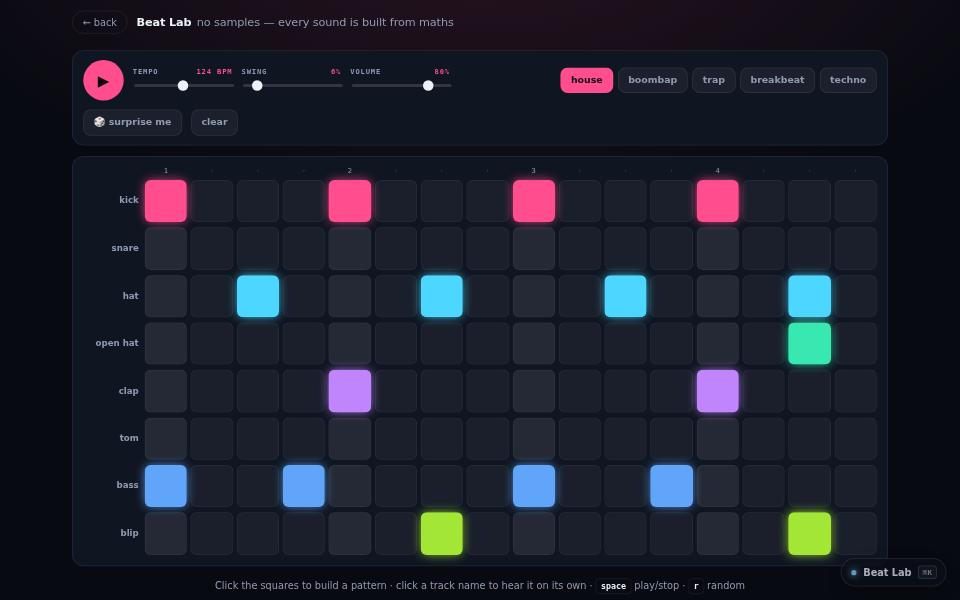

instrument · about 4 min · The Workshop Shallows
Beat Lab
A drum machine with no sound files in it — every kick and snare is generated from scratch.

The problem
A drum machine with no samples: every kick and snare is synthesised.
What it does
- A step sequencer with no sound files
- Every drum synthesised from oscillators and noise
- Random patterns that still sound like music
The most interesting decision
Synthesis, not samples
Kicks, snares and hats are built from oscillators and filtered noise, with a gentle limiter and a reverb made by filling a buffer with decaying noise.
Built with
- Web Audio synthesis
- Step sequencer
Evidence
No sound files in it.
Its world
A grid of pads lighting up in time, with nothing recorded anywhere.